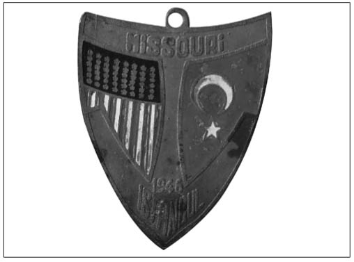

M-N
Marsilya Kiremitleri Olayı (Bir işadamının cin fikrinin nasıl çalıştığını gösteren canlı örnek): Türkiye’nin nereden nereye geldiğini gösteren canlı bir örnek olması nedeniyle bu konuyu bilmeyene “Sen ekonomiyi bilmiyorsun!” demek gerekir. İlk TBMM binası, harap hâldeydi. Bina Ankaralılar tarafından bağış toplanarak tamir ettirilmişti. Ancak binanın çatısı bir türlü tamamlanamı-yordu. Çünkü Cumhuriyet’in ilk yıllarında pek çok üründe olduğu gibi kiremit bulmakta da sıkıntı yaşanıyordu. Cumhuriyet’in kurulmasıyla birlikte başlayan yapılaşmada kullanılan kiremitler, Fransa’nın Marsilya şehrinden ithal ediliyordu. O yıllarda bir genç adam, o meşhur zekâsı ile sokak sokak dolaşıp evlerin çatılarındaki kiremitleri bir miktar para vererek toplamıştı. Sonra da bu topladığı kiremitlerle Meclis’in çatısını tamamlamıştı. Bu genç adam Vehbi Koç’tan başkası değildi.
Menderes’in Traktörleri (Tarımda makineleşmeyle ülkeye gelen traktörlere verilen genel ad):
DP’nin iktidara gelmesinin üzerinden çok geçmeden Türkiye, tarımda makineleşme olgusuyla tanıştı. Türk tarı-mındaki makineleşme ancak ithal edilen traktörlerle sağlanıyordu. Bir anda traktörler ülkeyi doldurmuştu ve yeni gelen traktörlere “Menderes Traktörü” deniliyordu.
Traktör konusunda madalyonun bir de diğer yüzü vardı. Bu konuda da ülkede çarpık ve savurgan bir makineleşme sorunu yaşanıyordu. Bazı kaynaklar Türkiye’nin zirai mekanizasyona geçmesiyle tam 173 değişik marka ve tipte traktörün yurda sokulduğunu tespit etmişti. İthal edilen traktörlerin asgari 173 markada oluşu, kullanılmasında, bakımında, onarımında ve yedek parça temininde büyük zorlukları da beraberinde getiriyordu. Marka bolluğu 1950’lerin ikinci yarısından itibaren yaşanacak döviz sıkıntısının da bir başka kaynağıydı. 1952’den itibaren Amerikan yardımları aksamaya başlayıp 1954’ten sonra da döviz sıkıntısı yaşanınca yabancı traktör üretici firmaları fikir değiştirmeye başladı. Artık onlar da “montaj üretimi” konusunda ortaklığa razı oldular. İlk olarak Minepolis Moline, Türk Traktör adıyla 1950’li yılların ortalarından itibaren faaliyete geçti.
Mercümek Skandalı (RP’nin adının karıştığı rüşvet skandalı): Refah Partisi’nin adının karıştığı Türkiye’nin önemli yolsuzluk olaylarından biri. 1994’ün ilk aylarında Refahlılar, Bosnalı Müslümanlara maddi yardımda bulunmak amacıyla tüm ülke çapında ve yurtdışında başlattıkları kampanyalarla, cami önlerinde ve mitinglerde yardım paraları topluyorlardı. Toplanan yardım paralarının da Bosna-Hersek hükümetine gönderildiği belirtiliyordu. Fakat çok geçmeden Bosna’ya gönderilen yardım paralarının yerine ulaşmadığı yönünde söylentiler yayılmaya başladı. İlk olarak, Bosna-Hersek’in Ankara Büyükelçisi Hajrudin Somun, RP’nin kendilerine hiç para göndermediğini açıkladı. İddialara göre de toplanan yardım paraları Bosnalı Müslümanlara gitmemiş, RP’nin seçim harcamalarında kullanılmıştı. Toplanan yardım paralarının Bosna-Hersek hükümetine gönderilmediğine ilişkin bir açıklama da dönemin başbakanı Tansu Çiller’den geldi. Söylentiler üzerine RP Genel Başkan Yardımcısı Şevket Kazan parayı partinin değil, partililerin topladığını, paranın İzzetbegoviç’in bir temsilcisine verildiğini ve kaç para olduğunu bilmediklerini söyledi. Kazan ayrıca, toplanan yardımların yasadışı yollarla Bosna’ya gönderildiğini ve Bosnalıların bu parayla silah aldıklarını ileri sürdü. Devlet Bakanı Necmettin Cevheri ise, RP’nin topladığı 26 milyar liradan sadece 6 milyar lirasının teslim edildiğinin belirlendiğini, 20 milyar lirayı ise göndermediklerini iddia etti. Bir süre sonra, RP’nin Bosna’ya yardım organizasyonunun başında olan Süleyman Mercümek’in, batan Marmara-bank ve TYT’de 1 milyon 800 bin doları ile 100 bin markı bulunduğu ortaya çıktı. İlerleyen günlerde Mercümek Skandalı’nın sonuçlarıyla ilgili siyasi gelişmeler de yaşanmaya başladı. ANAYOL hükümeti döneminde RP’nin Çiller hakkında soruşturma önergeleri vermesi üzerine, DYP de ellerinde RP’ye Libya ve Arap ülkelerinden yasa dışı yüklü yardımlar geldiğini ve Mercümek’in RP’nin gizli kasası olarak çalıştığını gösteren kesin deliller olduğunu öne sürmüş, araştırma önergesi vermişti. Mercümek’i araştırmak için kurulan komisyonun tamamlanmamış taslak raporunda ise, Mercümek’in Avrupa, Türkiye ve Ortadoğu arasındaki para trafiğini yönettiği ve 14 ayrı bankada yüklü döviz hesabının bulunduğu bilgisi yer aldı. 1996’da komisyona bilgi veren DYP Grup Başkan Vekili Ali Rıza Gönül, partisinin girişimiyle kurulan Mercümek Komisyo-nu’na, elinde belge olmadığını söyledi. Bu açıklamayla, daha önce Meclis tutanaklarına geçen kendi konuşmasını da yalanlamış olan Gönül, suçlamalarla ilgili olarak ellerinde belge olmadığını, sadece gazete haberlerinden yola çıkarak araştırma önergesi verdiklerini belirtti. Aslında yaşananlar çok da sürpriz değildi. Çünkü iki parti birbirini aklıyordu. TEDAŞ, TOFAŞ ve Mal varlığı araştırma komisyonlarında Tansu Çiller’i aklayan RP’ye bu kez de DYP’den destek gelmişti. Mercümek Komisyonu’nda, Mercümek’in RP ile hukuk dışı parasal bir ilişkisinin saptanmadığı kararı çıktı. Mercümek Skandalı’nın hukuki boyutundaki gelişme ise İstanbul-Konya arasında gidip gelen davanın, sonunda zaman aşımı nedeniyle düşmesi oldu.
Millî İktisat: (Bkz. Ey Türk Zengin Ol!).
Millîleştirmeler (Cumhuriyet döneminde yapılan ilk devletleştirme): 29 Ekim 1929’da New York Bor-sası’nda başlayan ve daha sonra zincirleme olarak bütün dünyaya yayılan ekonomik krizin etkisiyle hükümet, önemli ekonomik kararlar aldı. Uluslararası yatırımcıların bütün azgelişmiş ülkelerde yatırımlarını azalttığı bu yıllarda, Türkiye’de de benzer bir süreç yaşandı. Eldeki bilgilere göre, 1930-1945 yılları arasında Türkiye’de yabancı sermayenin etkinliği azaldı. Âli İktisat Meclisi kayıtlarına göre, yeni yabancı özel sermaye yatırımları 1929 yılında 12 milyon TL düzeyindeyken, 1931’de 1 milyon TL’nin altına düştü. Türkiye’de faaliyette bulunan şirketlerin sayısı
1927’de 113’ken 1933’de 71’e indi. En büyük daralma yabancı bankalar ve sigorta şirketlerinde yaşandı. Bankalar, şubelerinin birçoğunu 1930’ların başında kapattı. Ülkede faaliyette bulunan yabancı bankalar şube sayısını hızla azalttı. Yabancı sermaye açısından bu döneme millîleştirmeler damgasını vurdu. Cumhuriyet kurulduktan sonra özellikle kamu hizmeti niteliği taşıyan alanlarda faaliyet gösteren yabancı şirketlerin değerleri karşılığında millîleş-tirilmesine gidildi. 1928’de Anadolu, Mersin-Tarsus-Adana demiryolları ve Haydarpaşa Liman Şirketleri satın alındı. Millîleştirmeler, 1933’ten sonraki yıllarda hız kazandı. 16 yıl sürdü ve yabancı şirketlere tazminat olarak 236,5 milyon İsviçre frangı, 204,5 milyon Fransız frangı, 34,8 milyon İngiliz sterlini ve 10,7 milyon Türk lirası ödendi. (Hazine Dergisi, 80. Yıl Özel sayısı, s.113) 1923-1950 döneminde hükümet, 24 ayrıcalıklı yabancı şirketi millîleştirdi. Fakat yine de “millîleştirme” işlemlerini yabancı sermayeye karşı uygulanan bir politika olarak görmemek gerekir.Nitekim millîleştirmelerin en yoğun olduğu 1934-1938 yılları arasında Türkiye’de 32 yeni yabancı şirket faaliyete geçmiştir.
Missouri’nin Türkiye Ziyareti (İlk ABD savaş gemisinin Türkiye’ye gelişi): II. Dünya Savaşı’nın sona erdiği çift kutuplu dünyada Türkiye artık, siyasal olarak tercihini yapmak zorundaydı. Zaten bir yandan da Türkiye’nin başı toprak talebinde bulunan kuzey komşusu Sovyetlerle dertteydi. Türkiye-Amerikan ilişkilerinde en önemli dönüm noktası, 1946 yılında dönemin en güçlü savaş gemisi Missouri’nin İstanbul Limanı’na gelmesi oldu. ABD Başkanı Truman, 1946 yılı Nisan ayında Missouri zırhlısını Rusların Türkiye’den taleplerinin kabul edilemez oluşunu göstermek ve gövde gösterisi yapmak için İstanbul’a göndermişti. Tabii ki resmî gerekçe çok daha başkaydı. Türkiye’nin Washington’daki Büyükelçisi Münir Ertegün bir süre önce ölmüştü. Gemi, onun naaşını getiriyordu. Missouri’nin Türkiye’ye geleceği haberinin duyulması üzerine hazırlıklara biraz da abartılı olarak başlandı. Amerikan denizcilerinin karaya çıkacağı Dolmabahçe’de, yıllardır duran molozlar temizlenirken, Dolmabahçe’nin kırık camları bir gün içinde değiştirildi, caddeler sulandı, duvarlar yırtık afişlerden arındırıldı. Kızkulesi’nin üzerine “Welcome Missouri” yazısı oturtuldu ve Türk mahyacılık tarihinde ilk kez bir camiye, Dolmabahçe’deki Bezmialem Valide Sultan Camii’nin minareleri arasına “Welcome” mahyası asıldı. Beyoğlu ve Kapalıçarşı’daki hazırlıklar ise ticari amaçlıydı. Hazırlıklara genelevleriyle ünlü Abanoz Sokağı da dâhil edildi. Yukarıdan gelen emirlerle genelevler boyanıp, ABD askerlerinin hizmetine sunulmak üzere hazır hâle getirildi. 5 Nisan 1946 günü Missouri, Dolmabahçe önlerinde demirlediğinde yer yerinden oynadı. Gelen bir savaş gemisi değil, sanki ABD’nin kendisiydi. Missouri zırhlısı ile artık Türkiye’de hiçbir şey eskisi gibi olmayacaktı. Zırhlının gelişinden 6 gün sonra Türkiye, ABD’den 500 bin dolar borç istiyor ve istediğini alıyordu.

Gelen bir savaş gemisi değil, sanki ABD’nin kendisiydi. Missouri zırhlısı ile artık Türkiye’de hiçbir şey eskisi gibi olmayacaktı.
Montajcılık (Bir sanayileşme stratejisi): Montajcılık, Türkiye’nin yoğun kalkınma hamlesi içine girdiği 1950’li yıllarda başlamıştı.1960’lardan sonra ise bayağı somutlaşmış bir ifade olarak sanayi literatürüne girdi. Sadece otomotiv ürünlerinde değil, ziraat aletleri, buzdolabı, elektrik süpürgesi gibi ev aletleri, radyo, pikap, teyp, elektrikli tıraş makinesi gibi elektronik cihazlar, yazı ve hesap makineleri ile telefon santrallerinde uygulanan üretim yöntemi olarak, montaj tekniği kullanılıyordu. Montaj Sanayi Talimatı, 1964’te Resmî Gazete’de yayımlanarak yürürlüğe girdi. Montaj üretimi yapan sanayi kuruluşlarında da büyük kabul gören talimatın temel esprisi ithal ikamesine dayanıyordu. Talimat, ithal edilecek herhangi bir aksamın veya materyalin yerine yerlisinin yapılıp oturtulmasını emretmekteydi. Temeli “döviz tasarrufu” demek olan ithal ikamesi gerçekleştirilirken uyulması gereken esasları bünyesinde toplamış olan mevzuat şekline de “Montaj Sanayi Talimatı” adı verilmişti. Dönemin kimi gözlemcilerine göre, ABD ve Avrupa ülkelerini yaklaşık 50 yıl geriden takip eden otomotiv endüstrisi günümüzde kullandığı teknolojiyi bu sayede yakalamıştır. Kimilerine göre, zaten başka da çare yoktu. Türkiye 1963’te planlı kalkınma dönemine girmiş ve karma ekonomi düzeni içinde, dış ticaret politikası araçlarından da yararlanarak hızlı bir sanayileşmenin gerçekleşmesi amaç edinilmişti. Bu amaç doğrultusunda bir sanayileşme stratejisi olarak, birçok azgelişmiş ülkede olduğu gibi Türkiye’de de salt ithal ikamesi politikası seçilmişti. Türkiye’de montaj tesislerinin kurulmasıyla, Türkiye gibi azgelişmiş ülkeler taşıt araçları ithalini en aza indirerek, komple taşıt ithali yerine parça ithal ederek montaj taşıt üretmeye başladılar.
Mutlu Azınlık (DP iktidarı döneminde kolayca zenginleşenlerin genel adı): 1950’li yıllarda, enflasyon sabit gelirlileri perişan ederken iş çevrelerinin geliri artıyor, fakirden zengine doğru bir gelir transferi gerçekleşiyordu. Karaborsa, spekülasyon ve siyasi nüfuz nedeniyle kolay para kazanma yolları artmış, hırsızlık ve yolsuzluk söylentileri almış başını yürümüşken Başbakan Menderes, kendi uyguladığı politikanın sonuçlarından şikâyet etmekteydi:
“Çalıyorlar, birader, çalıyorlar. Ne diyeyim, Allah belasını versin! Ama ben ne yapayım? Ben Başvekilim, müfettiş değilim ki!”
Ekonomi üzerindeki baskılar ve ardından gelen müdahale politikaları spekülatif faaliyetlerin artmasına yol açtı. Karaborsacılığa ve ithalat izinlerinin dağıtımına ilişkin yolsuzluk söylentileri gazetelerin manşetlerinden hiç inmiyordu. “Mutlu azınlık” deyimi bu yılların ürünüydü ve kitlelerin fakirleşmesi pahasına kolayca zenginleşen bir azınlığa karşı uyanan öfkeyi dile getirmekteydi. Olayların üzerine giden hükümet yine de çaresiz kalmaktaydı. 1954’ün ilk yarısında çeşitli bakanlıkların temsilcilerinden oluşan bir ekip İstanbul, Ankara ile Türkiye’nin güney ve batı bölgelerinde yoğun bir stok denetimine girişti. Denetimlerin sonucunda, birçok ithalatçı yasadışı stok bulundurulduğu gerekçesiyle tutuklandı. Önlemlere rağmen, karaborsa artmaya, fiyatlar yükselmeye devam ediyordu. Karaborsacılara yönelik öfkenin boyutları o derece arttı ki, 1956’da Meclis’e getirilen ve reddedilen yasa teklifinde karaborsacıların idamı isteniyordu.
Naylon Çorap (II. Dünya Savaşı sonrası tanışılan çorap türü): Savaş yılları insanların yaşam tarzlarını da etkiledi. Savaş yıllarında şapkanın yerini başa türban tarzında bağlanan büyük eşarplar almaya başlamıştı. Şapka, savaşla birlikte yok olup gitmişti. Savaştan sonra 1950’lere doğru Amerika’ya yakınlaşmayla birlikte, Amerikan tipi yaşam tarzı da egemen oldu. Türkiye’yi buzdolabıyla tanıştıran Frigidaire ve diğer markalar çok yaygın-laşmasa da yavaş yavaş evlerdeki yerlerini almaya başladılar. Modanın gündemindeki naylon çorap, ipek çorabın yerini hızla doldurdu. İnsanlar pamuk ve merserize çoraplardan sıkılmışlardı. Çok çabuk eskiyen ve kullanışsız olan bu çorapların yerini o yıllarda yeni çıkan naylon çoraplar almaya başlamıştı. Naylon, Avrupa’daki savaşın bitmesinin ardından revaçta olan maddeydi, o zamanın en büyük icadıydı. Naylondan yapılmış kadın çorapları ve erkeklerin Frenk gömlekleri en revaçta olan şeylerdi. Bu süreçte naylon gömlek, naylon çamaşır, naylon elbise edinme merakı hızla arttı. Türkiye’de de 1946’dan itibaren büyük kentlerdeki mağazaların vitrinlerini artık “naylon” çoraplar süslüyordu. Ucuz oluşları ve yıkanmasının kolaylığı nedeniyle naylon çorap yeni dönemin en önemli mamullerinden biriydi. Naylon çorap, bu yıllarda Türkiye’deki değişimi sergileyen en önemli nesneydi. Kadınlar arkadan dikişli naylon çoraplarıyla öykündükleri Amerikan aktrislerine biraz daha yaklaşıyorlardı.